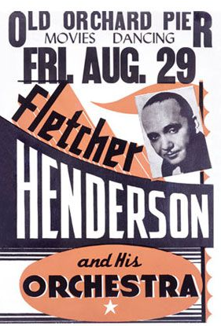
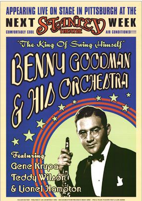

E
n Europe au début des années 30, le crooner n'existe-t-il pas ?
D écembre 1931, pendant que se déroule la « Bataille des Barytons » opposant les trois crooners dont je vous ai compté précédemment la carrière et qui fit même l’objet d’une chanson :
« Crosby, Columbo, and Vallée »
par Al Dubin et Joe Burke (voir ci-dessous), les Européens ne sont pas en reste avec, à la même époque,le French crooner
incarnés par Jean Sablon et Maurice Chevalier.E nfin, en Amérique du Sud comme en Amérique du Nord, l’avènement de la radio va créer une série de chanteurs romantiques de la radio que l’on appellera
les Latin crooner :
Pedro Vargas, Orlando Silva, Francisco Alves... et parmi eux, un chanteur mythique d’origine française : Carlos Gardel. M Mais le style connaît beaucoup de mauvaises critiques au début des années 1930, au point où le terme « crooner » n’est même plus pris au sérieux. Plusieurs organisations lui donnent une mauvaise réputation, comme l’association des professeurs de chants de New York qui appelle le style « corrompu »,le New York Times
qui traite le style comme étant un fade qui ne durerait pas dans l’industrie. De plus, le cardinal de Boston, William Henry O’Connel, parlant au nom des catholiques des États-Unis, donne une très mauvaise critique au crooner dansThe Literary Digest
en 1932, en appelant le style dégénéré, souillant, ignoble et sans principes, imbécile et immoral. Une critique choquante comme celle-ci ne réapparaitra que 25 ans plus tard pour un autre style de musique et principalement contre l'un de ses premiers interprètes, lorsque Elvis Presley, un grand admirateur de Bing Crosby, se déhanche sur la scène et brasse les fondations de la culture traditionnelle causant un délire en Amérique.A l'époque, ce sont les
Bigs Bands
(grands orchestres de jazz) qui ont conquis le grand public. Les plus célèbres sont représentés par Fletcher Anderson, Chick Webb, Count Basie, Cab Calloway, Duke Ellington, Shep Fields, Glenn Miller, Benny Goodman, Artie Shaw. Mais en peu de temps, les deux styles vont fusionner. L'exemple le plus connu étant Frank Sinatra qui débutera dans l'orchestre de Harry James avant d'être engagé par Tommy Dorsey, le roi du swing.

Artie Shaw - One Song (Nita Bradley, vocal - 1937)
Chick Webb & His Little Chicks - I Got Rhythm - 1937)